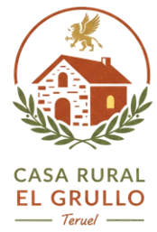

La casa
Actividades
Mar
Montaña
En la casa
Reserva
Contáctanos
Excursiones a la Costa
Aunque Teruel no tiene mar, ofrecemos traslados exclusivos a las playas de Castellón.
Reserva tu transporte aquí